WeGo NERO
Studio
로봇 스킬 학습 · 실제 로봇 적용
이 가이드는 NERO Studio의 기능, 제어판의 각 항목이 하는 일, 그리고 첫 실행부터 학습된 정책을 로봇에서 실행하기까지의 과정을 설명합니다.

이 설명서에 대하여
| 대상 | VR로 NERO를 원격조작하고, 시연을 녹화하고, 정책을 학습해 로봇에서 실행하는 운영자와 개발자 |
| 근거 문서 | NERO Studio 저장소의 사용 가이드 (docs/nero-studio-guide.ko.md, 2026-11-05) |
| 함께 보는 책 | AgileX NERO 운용 설명서 (로봇팔 연결 · 웹 제어 화면) |
| 판 | 한국어판 · 2026.11.24 |
| 문의 | go.support@wego-robotics.com |
NERO Studio는 특정 작업 하나에 묶여 있지 않습니다. 원격조작, 녹화, 학습, 추론은 VR로 로봇에게 보여 줄 수 있는 양팔 작업이라면 무엇이든 똑같이 동작합니다. 이 가이드는 소포 처리 작업 하나를 예시로 씁니다. 로봇이 들어오는 컨베이어에서 소포를 끌어와 정렬하고, 바코드 리더 쪽으로 기울여 스캔한 뒤, 나가는 컨베이어로 넘기는 작업입니다. 화면 캡처와 예시 값은 이 작업에서 가져왔습니다. 이 작업에만 해당하는 내용은 예시 응용으로 표시했습니다. 다른 작업에 제어판을 맞추는 방법은 §17을 보십시오.
영문판은 WeGo NERO Studio User Guide입니다. 제어판 헤더의 한 / EN 버튼으로 화면 언어를 바로 바꿀 수 있습니다. 아래에 굵게 표시된 버튼 이름은 한국어 화면에 실제로 나타나는 이름입니다 (툴팁과 로그는 영어로 남습니다).
새 PC에 설치하는 방법은 README §3, 제어판이 다루는 데이터 스트림은
nero-zmq-api.md를 보십시오.
새 정책은 항상 드라이런으로 먼저 시험하고, 그다음 빈 공간에서 비상 정지 버튼에 손을 얹은 채 로봇에서 시험하십시오.
© WeGo Robotics. 표지 그림은 NERO 로봇 모델을 MuJoCo로 렌더링한 것이고, 본문 화면은 NERO Studio 제어판을 캡처한 것입니다. AgileX, NERO는 AgileX Robotics의 상표입니다.
목차
- 01시스템이 하는 일
- 02주요 기능
- 03로봇 구성
- 04NERO Studio 실행
- 05제어판 한눈에 보기
- 06제어판 항목 설명
- 07상태 표시
- 08시작하기 전에
- 09VR 원격조작
- 10비상 정지 · HOLD · 해제
- 11시연 녹화
- 12녹화 검토와 편집
- 13정책 학습
- 14로봇에서 정책 실행
- 15물체 게이트: 작업할 물체가 있을 때만 실행
- 16VR로 정책 보정
- 17새 작업에 맞추기
- 18저장되는 설정
- 19다른 프로그램 연결
- 20안전 수칙
- 21문제가 생겼을 때
- 22라이선스
시스템이 하는 일
NERO Studio는 NERO 양팔 로봇의 작업 전체를 한 창에서 다룹니다. VR 헤드셋으로 로봇을 원격조작하고, 카메라 3대로 시연을 녹화하고, 그 데이터로 정책을 학습하고, 학습된 정책을 로봇에서 실행합니다.
제어판은 로봇을 직접 다루지 않습니다. 실제 일을 하는 프로그램들(팔 브리지
robot/nero_bridge.py, VR 서버, 카메라 서버, 녹화기, 변환기, 학습, 추론)을 실행하고
지켜봅니다. 각 카드에는 그 카드가 실행하는 프로그램 이름이 적혀 있고, 프로그램의
출력은 아래쪽 로그에 나타납니다.
요약하면 다음과 같습니다.
- 팔을 관찰 모드로 연결하고, 준비되면 모션을 활성화합니다.
- PICO / Quest 헤드셋으로 양팔과 Revo2 양손을 원격조작합니다.
- 측정된 로봇 자세를 3D로 실시간 확인합니다. 팔이 명령보다 늦으면 명령이 파란 반투명 팔로 보입니다.
- 키 하나로 테이크를 녹화하고, 성공/실패 라벨을 붙이고, 검토 · 자르기 · 검사합니다.
- 같은 녹화로 ACT, Advanced ACT, Diffusion, SmolVLA를 변환 · 학습합니다.
- 학습된 정책을 드라이런으로 먼저, 그다음 로봇에서 실행합니다. 원하면 헤드 카메라에 작업할 물체가 보일 때만 실행하게 할 수 있습니다 (물체 게이트, §15).
주요 기능
| 기능 | 이점 |
|---|---|
| 관찰 우선 연결 | 모터를 켜기 전에 팔이 보고하는 관절 값부터 확인 |
| 실시간 3D 로봇 뷰 | 측정 자세와 손 쥠 정도, 팔이 늦을 때는 명령 자세를 반투명으로 표시 |
| 속도 · 추종 · 램프 슬라이더 | 연결 중에도 팔이 따라오는 속도와 허용 오차를 바로 조정 |
| 키 하나로 비상 정지 (Esc) | 브리지로 양팔을 감쇠 정지 |
| 손 간격을 조절하는 VR 원격조작 | 헤드셋으로 양팔 · 양손 조작, 간격으로 로봇 손이 서로 닿게 조절 |
| 라벨과 조건이 붙는 녹화 | F5 / F6 / F7, 배경 · 조명 · 작업자를 테이크마다 저장 |
| 테이크별 타이밍 검사 | 카메라 속도, 카메라-관절 시간차, 팔 추종을 학습 전에 확인 |
| 검토 · 자르기 · 삭제 | 제어판 안에서 데이터셋 정리 |
| 학습 레시피 4종 | ACT, Advanced ACT (DINOv3), Diffusion, SmolVLA, 실시간 손실 그래프 |
| 추론 모드 4종 | chunk, chunk + fade, temporal ensemble, motion player |
| 물체 게이트 (박스 사이클 카드) | 헤드 카메라의 지정 영역에 물체가 있는 동안만 정책을 실행하고, 끝나면 시작 자세로 복귀 |
| 실행 중인 정책을 VR로 보정 | 정책에서 팔을 넘겨받았다가 돌려주며 보정 데이터 수집 |
| 물체 카운터 (카운트) | 출구 영역으로 나간 물체 수를 날짜별 CSV에 기록 |
| 한국어 / 영어, 다크 / 라이트 | 헤더에서 바로 전환 |
로봇 구성
- 팔: 몸통 마운트에 단 AgileX NERO 7자유도 로봇팔 2대입니다. CAN 버스는
can_left,can_right입니다. - 손: BrainCo Revo2 Touch 다관절 손(마운트
humanoid) 또는 NERO 2지 그리퍼 (마운트humanoid_gripper)입니다. - 카메라: 헤드 카메라(Logitech C920, 864×480)와 손목 카메라 2대(640×480)입니다.
영상은
data/image_server.py가 보냅니다. - VR: NERO VR 앱을 실행한 PICO 4 Ultra 또는 Meta Quest입니다. VR 서버
(
scripts/questarm-mujoco.sh)로 연결합니다. - 로봇 PC: 제어판, 브리지, 카메라, 추론이 로봇 PC에서 실행됩니다. 긴 학습은 학습 PC에서 합니다 (§13).
NERO Studio 실행
로봇 PC에서 다음 명령으로 실행합니다.
cd ~/workspace/NERO_DualArm_VR .venvs/questarm/bin/python3 ./data/nero_studio.py
다른 PC에서는 저장소를 클론한 폴더에서 같은 파일을 실행합니다. PySide6, h5py, zmq, OpenCV가 있는
Python이 필요합니다. 학습과 추론은 별도의 LeRobot 환경에서 실행됩니다.
<repo>/.venvs/lerobot이 있으면 그 환경을, 없으면 ~/miniconda3/envs/lerobot을 씁니다.
다른 환경을 쓰려면 NERO_LEROBOT_PY를 지정하십시오.
제어판은 마지막으로 쓴 페이지와 설정으로 열립니다 (§18). 카메라 카드의 실행 시 시작이 체크되어 있으면 창이 열리고 1초 뒤 카메라가 시작됩니다.
3D 로봇 뷰에는 MuJoCo와 OpenGL이 필요합니다. 없으면 제어판은 팔을 선으로 그리고, 터미널에
[studio] 3D robot view off, drawing the skeleton: …이라고 이유를 남깁니다. 나머지
기능은 그대로 동작합니다.
새 PC에 설치. bash scripts/setup-deps.sh (README §3)가 고정 버전의 소스와 환경을 설치한 뒤
scripts/wego-install-downloads를 실행합니다. 이 단계는 WeGo가 배포하지 않는 두 부분을 내려받으므로
인터넷이 필요합니다. 각 부분을 설치하기 전에 라이선스를 보여 주고 y/N으로 묻습니다.
| 부분 | 내용 | 크기 | 필요한 기능 |
|---|---|---|---|
| GPU 구성요소 | PyTorch 2.7.1 (CUDA 12.6 빌드), torchvision, Triton, NVIDIA CUDA 라이브러리 14개. NVIDIA 라이선스 조건 (requirements/gpu_wheels.tsv) |
파일 17개, 2.99 GB | 학습, 평가, 추론 |
| 사전학습 가중치 | ResNet18 ImageNet (act), DINOv3 ViT-S/16, DINOv3 License (advanced act), SmolVLA base와 SmolVLM2 설정·토크나이저, Apache-2.0 (smolvla) (requirements/model_weights.tsv) |
파일 18개, 1044.8 MB | 해당 정책 학습 |
모든 파일은 revision과 sha256으로 고정되어 있고, 맞지 않는 파일은 거부합니다. 옵션은
setup-deps.sh에 그대로 넘깁니다.
| 옵션 | 동작 |
|---|---|
--yes |
NVIDIA와 각 모델의 라이선스에 묻지 않고 동의 |
--nvidia-wheels DIR |
GPU 구성요소를 인터넷 대신 폴더에서 설치 |
--cpu-only |
GPU 구성요소 건너뜀 (이때 학습·평가·추론에 CUDA가 없음) |
--models-dir DIR |
가중치를 인터넷 대신 폴더에서 설치 |
--skip-models |
가중치 건너뜀 (그 가중치가 필요한 정책은 ▶ 학습이 거부) |
scripts/wego-install-downloads --check는 설치 상태만 보여 주고 아무것도 바꾸지 않습니다.
이전 버전으로 설치한 PC는 가중치가 ~/.cache에 있습니다.
scripts/wego-install-downloads --models-dir ~/.cache를 한 번 실행하십시오. 맞는 파일을
.venvs/models/로 복사하고 sha256을 확인합니다. 이미 설치된 PyTorch를 그대로 쓰려면 GPU 질문에 N으로
답하십시오. 그다음 --models-dir 없이 한 번 더 실행하면 그곳에 없던 파일을 내려받습니다. 그전까지는
▶ 학습이 act, advanced act, smolvla를 거부합니다.
추론에는 이 가중치가 필요 없습니다. 체크포인트에 학습된 가중치가 모두 들어 있습니다. SmolVLA 체크포인트만 SmolVLM2 설정과 토크나이저를 읽습니다.
제어판 한눈에 보기
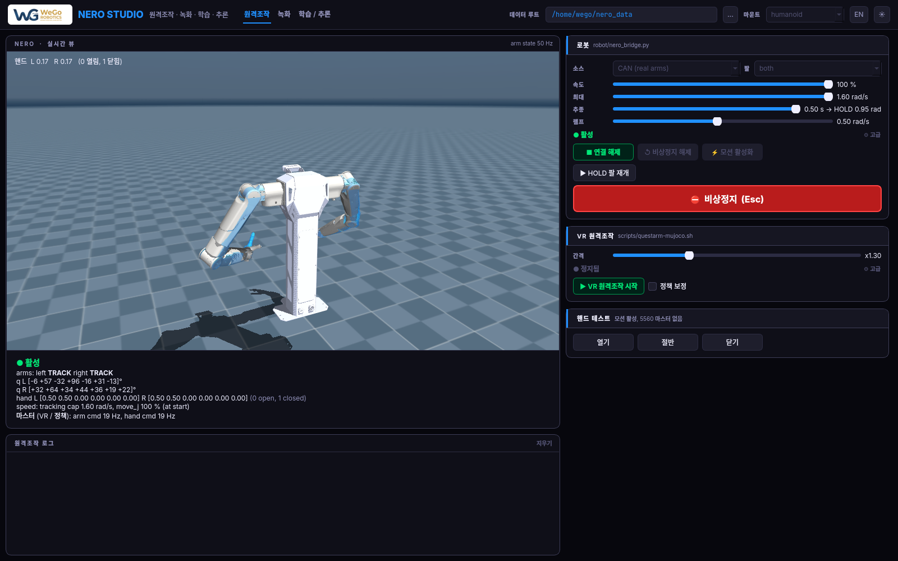
창은 세 페이지로 되어 있으며, 페이지는 헤더에서 고릅니다.
| 페이지 | 왼쪽 | 오른쪽 카드 |
|---|---|---|
| 원격조작 | 실시간 3D 로봇 뷰, 로봇 상태, 원격조작 로그 | 로봇, VR 원격조작, 핸드 테스트 |
| 녹화 | 실시간 카메라, 녹화 로그 | 스트림, 카메라, 데이터 녹화 & 검토 |
| 학습 / 추론 | 학습 손실 그래프, 학습 / 추론 로그 | 데이터셋, 학습, 추론, 박스 사이클 |
제어판은 화면에 보이는 페이지만 그립니다. 카메라 영상도 녹화 페이지가 보일 때만 디코딩합니다. 로봇 PC의 CPU를 정책 실행에 남겨 두기 위해서입니다.
각 카드의 머리글에는 카드 이름, 실행하는 프로그램, 상태 표시(§7)가 있습니다. 카드의 ⚙ 고급을 누르면 자주 바꾸지 않는 설정이 나타납니다.
제어판 항목 설명
처음 읽을 때는 건너뛰어도 됩니다. 어떤 항목이 정확히 무엇을 하는지 알고 싶을 때 돌아와 보십시오.
6.1 헤더
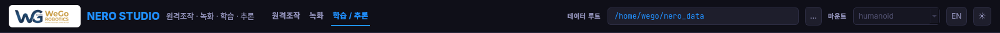
| 항목 | 하는 일 |
|---|---|
| 원격조작 / 녹화 / 학습 / 추론 | 페이지 전환 |
| 데이터 루트 | 모든 데이터가 저장되는 폴더 (기본 ~/nero_data). …로 다른 폴더 선택 |
| 마운트 | humanoid (Revo2 손) 또는 humanoid_gripper (2지 그리퍼). 브리지, VR, 녹화 중에는 잠김 |
| 한 / EN | 한국어 또는 영어, 바로 적용. 툴팁과 로그는 영어 |
| ☀ / ☾ | 라이트 또는 다크 테마, 바로 적용 |
데이터 루트 아래의 폴더 구성은 다음과 같습니다.
| 폴더 | 내용 |
|---|---|
recordings/<작업>/episode_*.hdf5 |
작업마다 폴더 하나, 테이크마다 파일 하나 |
lerobot/<데이터셋 ID>/ |
변환된 데이터셋 |
train/<날짜>_<시각>_<정책>/ |
학습 실행과 체크포인트 |
logs/teleop_<날짜>.log |
원격조작 로그와 추론 출력, 시각 포함 |
logs/takeover_<날짜>.jsonl |
실행 중인 정책을 VR로 보정한 기록 (§16) |
library/*.npz |
motion player용 모션 라이브러리 (§14) |
box_*.ts |
물체 게이트용 물체 검출기 (§15). 기본으로 가장 최근 파일을 불러옴 |
head_train_ref.jpg |
조정이 겹쳐 보여 주는 학습 당시 화면 (§15) |
6.2 로봇 카드
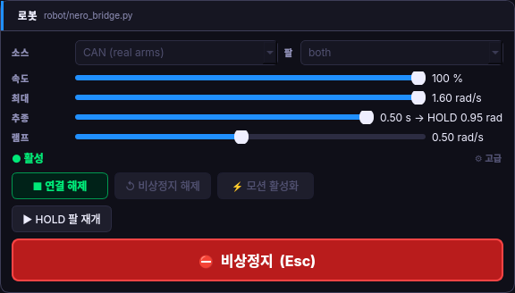
| 항목 | 하는 일 |
|---|---|
| 소스 | CAN (real arms)은 실제 팔, mock (no robot)은 연습용 가상 팔입니다 |
| 팔 | both, left, right 중에서 연결할 팔을 고릅니다 |
| 속도 | 팔 SDK의 이동 속도(1–100 %)입니다. 연결 중에도 바로 적용됩니다 |
| 최대 | 브리지의 추종 속도 상한(0.05–1.60 rad/s)입니다. 연결 중에도 바로 적용됩니다. VR 서버는 VR을 시작할 때 한 번만 읽습니다 |
| 추종 | 팔이 명령보다 얼마나 늦어도 되는지 정합니다. 이 한계를 넘으면 브리지가 그 팔을 HOLD합니다. 옆에 표시되는 값이 실제 한계(0.15 rad + 추종 × 최대)입니다. 바로 적용됩니다 |
| 램프 | 활성화 직후나 HOLD에서 재개할 때, 멀리 떨어진 명령 자세로 다가가는 속도입니다. 바로 적용됩니다 |
| ▶ 연결 (관찰) | 브리지를 시작합니다. 팔은 관절 값만 보고하고 모터는 움직이지 않습니다. 누르면 버튼이 ■ 연결 해제로 바뀝니다 |
| ↺ 비상정지 해제 | 비상 정지된 팔을 리셋합니다. 그 즉시 모터 전원이 꺼져 들려 있던 팔이 떨어집니다. 먼저 팔을 내리거나 받치십시오 |
| ⚡ 모션 활성화 | 모터를 켭니다. 팔은 그 자리를 유지하고, 첫 명령에는 램프 속도로 다가갑니다 |
| ▶ HOLD 팔 재개 | HOLD로 멈춘 팔을 다시 움직입니다. 램프 속도로 현재 명령에 다가갑니다 |
| 비상정지 (Esc) | 이 제어판에서 시작한 브리지로 양팔을 감쇠 정지합니다. 기본 정지 수단은 언제나 물리 비상 정지 버튼입니다 |
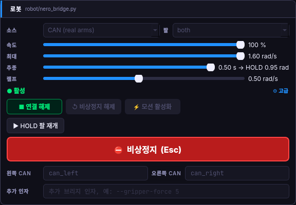
| ⚙ 고급 | 하는 일 |
|---|---|
| 왼쪽 CAN / 오른쪽 CAN | CAN 인터페이스 이름, can_left / can_right |
| 추가 인자 | 브리지 추가 인자, 예: --gripper-force 5 |
소스, 팔, CAN 이름, 추가 인자는 연결할 때 읽으며, 브리지가 실행 중이면 잠깁니다.
6.3 VR 원격조작 카드
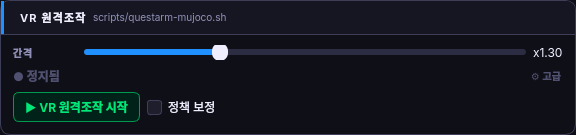
| 항목 | 하는 일 |
|---|---|
| 간격 | 작업자 손의 좌우 움직임을 로봇에서 몇 배로 키울지 정합니다(×1.00–×2.00). 로봇 손바닥은 0.44 m 떨어진 채 시작해 사람 손보다 간격이 넓으므로, ×1이면 사람 손끼리 먼저 맞닿습니다. VR을 시작할 때 읽습니다 |
| ▶ VR 원격조작 시작 | VR 서버를 시작합니다. 마운트는 헤더에서, 속도는 최대에서, 간격은 간격에서 가져옵니다. 누르면 버튼이 ■ VR 정지로 바뀝니다 |
| 정책 보정 | VR로 팔을 혼자 조작하는 대신, 실행 중인 정책 옆에서 VR을 시작합니다 (§16). VR을 시작하기 전에 설정합니다 |
| ⚙ 인자 | VR 서버 추가 인자입니다. 기본값은 --godot --w-pos 20입니다 |
최대나 간격을 바꾸면 VR 서버에는 다음에 시작할 때 적용되며, 로그에도 그렇게 표시됩니다.
6.4 핸드 테스트 카드
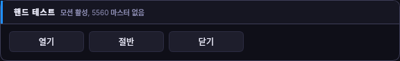
열기, 절반, 닫기는 양손에 손 명령 하나를 약 1.2초 동안 보내고, 그 뒤 손은 그 상태를 유지합니다. 이 버튼은 모션이 활성화되어 있고, VR 서버나 정책이 손을 조작하지 않을 때만 동작합니다.
6.5 실시간 뷰와 로봇 상태 (원격조작, 왼쪽)
- 3D 뷰는 작업자가 서는 방향, 즉 뒤에서 본 NERO입니다. 측정된 관절과 손 쥠 정도를 보여 줍니다. 팔이 명령보다 0.03 rad 넘게 늦으면 명령 자세가 파란 반투명 팔로 나타납니다. 드래그하면 시점이 돌고, 더블클릭하면 원래대로 돌아옵니다.
- 측정 관절이 없으면 모델은 VR 홈 자세로 서 있고 5561에 측정된 팔 상태 없음이라고 표시합니다.
- 아래 상태 줄에는 브리지 상태, 팔별 모드 (
TRACK,IDLE, HOLD — press ▶ Resume), 마지막 오류, 관절 각도(도), 손 쥠 정도 (0 열림, 1 닫힘), 손별 Revo2 Touch 장치, 적용 중인 속도 상한, 그리고 어떤 마스터(VR 또는 정책)가 몇 Hz로 명령하는지가 표시됩니다.
6.6 스트림 카드 (녹화)
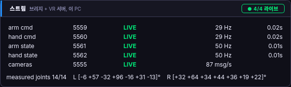
이 PC의 데이터 스트림마다 포트, 상태 (LIVE, STALE, OFF), 속도, 지연을 보여 줍니다. 스트림은 팔 명령 5559, 손 명령 5560, 측정 팔 5561, 측정 손 5562, 카메라 5555입니다. 마지막 줄은 측정 관절 각도(도)입니다. 터미널에서 시작한 프로그램의 스트림도 보입니다.
6.7 카메라 카드 (녹화)
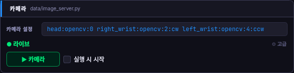
| 항목 | 하는 일 |
|---|---|
| 카메라 설정 | 카메라 목록을 이름:종류:ID[:WxH][:회전] 형식으로, 띄어쓰기로 구분해 적습니다. 예: head:opencv:0 right_wrist:opencv:2:cw left_wrist:opencv:4:ccw. 전체 문법은 툴팁을 참고하십시오 |
| ▶ 카메라 | 카메라 서버를 시작하거나 정지합니다. USB에서 빠졌던 카메라는 스스로 다시 연결됩니다 |
| 실행 시 시작 | 제어판을 열 때마다 이 카메라들을 시작합니다 |
| ⚙ 고정 | 노출, 화이트 밸런스, 초점을 고정합니다. 예: all:auto_exposure=1,exposure_time_absolute=83. 비워 두면 카메라마다 자동으로 맞춥니다. 설정은 USB를 다시 연결한 뒤에도 다시 적용되고, 테이크마다 저장됩니다. 항목 이름은 v4l2-ctl -d /dev/videoN --list-ctrls로 확인합니다(v4l-utils 필요). C920의 제약은 툴팁을 참고하십시오 |
| ⚙ 깊이 / FPS | 깊이도 보낼 카메라(RealSense만)와 프레임 속도(기본 30)를 정합니다 |
데이터셋 하나에는 카메라 설정 하나를 유지하십시오. 카메라 이름, 크기, 회전이 모두 같아야 합니다. 변환기는 카메라 크기가 첫 테이크와 다른 테이크를 건너뜁니다.
6.8 데이터 녹화 & 검토 카드 (녹화)
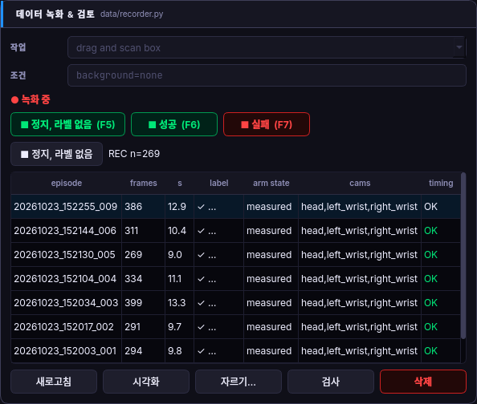
| 항목 | 하는 일 |
|---|---|
| 작업 | 작업을 설명하는 간단한 지시문입니다. 예: put the cup on the tray (예시 응용: drag and scan box). 작업마다 폴더가 따로 생깁니다. 기존 작업을 고르거나 새로 입력합니다 |
| 조건 | 테이크마다 저장되는 키=값 목록입니다. 예: background=none lighting=day operator=op1. 나중에 테이크를 고르거나 제외할 때 씁니다 |
| ● 녹화 (F5) | 테이크를 시작합니다. 녹화 중에는 버튼이 ■ 정지, 라벨 없음 (F5)로 바뀝니다 |
| ■ 성공 (F6) | 정지하고 성공 라벨을 붙입니다 |
| ■ 실패 (F7) | 정지하고 실패 라벨을 붙입니다. 실패 이유를 묻습니다 |
| ■ 정지, 라벨 없음 | 라벨 없이 정지합니다 |
| 테이크 목록 | 작업의 테이크를 최신순으로 보여 줍니다. 프레임 수, 초, 라벨, 팔 상태(측정 값 또는 명령만), 카메라, timing 판정(OK / WARN / BAD, 마우스를 올리면 이유 표시)이 나옵니다 |
| 새로고침 | 폴더를 다시 읽습니다 |
| 시각화 | 선택한 테이크를 3D 재생 뷰어로 엽니다 (줄을 더블클릭해도 됩니다) |
| 자르기… | 테이크의 일부 구간만 남깁니다 (§12) |
| 검사 | 작업에 있는 모든 테이크의 타이밍 보고서를 보여 줍니다 |
| 삭제 | 선택한 테이크를 삭제합니다. 되돌릴 수 없습니다 |
6.9 데이터셋 카드 (학습 / 추론)
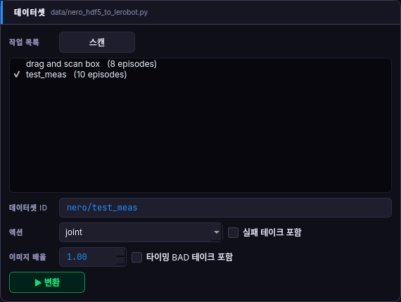
| 항목 | 하는 일 |
|---|---|
| 작업 목록 | 작업 폴더와 테이크 수를 보여 줍니다. 변환할 작업을 체크합니다. 스캔으로 다시 읽습니다 |
| 데이터셋 ID | 데이터셋 이름(소유자/이름)입니다. 예: nero/drag_scan_20261101_s05 |
| 액션 | joint (관절 각도, 기본) 또는 ee (손바닥 자세)를 고릅니다 |
| 실패 테이크 포함 | 실패한 테이크도 변환합니다 (기본 꺼짐) |
| 이미지 배율 | 학습 전에 모든 카메라 영상을 줄입니다. ACT, Advanced ACT, SmolVLA는 1, Diffusion은 0.5를 씁니다. 배율마다 데이터셋 ID를 따로 쓰십시오 |
| 타이밍 BAD 테이크 포함 | 검사에서 BAD로 나온 테이크도 변환합니다 (기본 꺼짐) |
| ▶ 변환 | 데이터셋을 만듭니다. 같은 ID가 있으면 물어본 뒤 다시 만듭니다 |
6.10 학습 카드 (학습 / 추론)
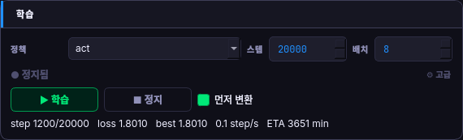
| 항목 | 하는 일 |
|---|---|
| 정책 | act, advanced act, diffusion, smolvla (§13) |
| 스텝 / 배치 | 학습 스텝 수와 배치 크기. 스텝의 1/4마다 체크포인트 저장 |
| ▶ 학습 / ■ 정지 | 이 PC의 GPU에서 학습 시작/정지 |
| 먼저 변환 | 학습 전에 체크한 작업을 데이터셋 ID로 변환 |
| 상태 줄 | 스텝, 손실, 최저 손실, 초당 스텝, 남은 시간. GPU 메모리 부족이나 NaN 손실을 경고 |
| ⚙ 추가 인자 | 학습 추가 인자. 같은 키는 레시피 값보다 우선 |
왼쪽 학습 손실 그래프는 학습하는 동안 손실을 로그 눈금으로 그립니다.
6.11 추론 카드 (학습 / 추론)
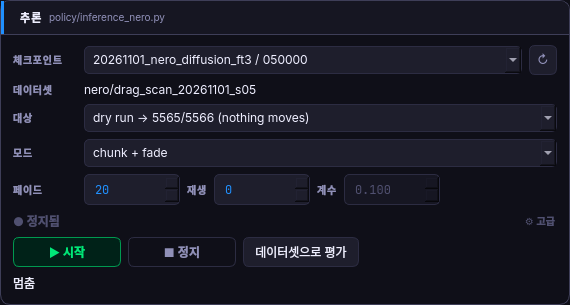
| 항목 | 하는 일 |
|---|---|
| 체크포인트 | 데이터 루트/train 아래의 모든 체크포인트(최신순)와 모션 라이브러리. ↻로 다시 읽기 |
| 데이터셋 | 체크포인트가 학습한 데이터셋 (체크포인트에서 읽음) |
| 대상 | dry run → 5565/5566 (nothing moves) 아무것도 움직이지 않음, 또는 ROBOT → 5559/5560 (bridge) |
| 모드 | chunk, chunk + fade, temporal ensemble, motion player (§14) |
| 페이드 / 재생 | chunk + fade 전용: 섞는 길이(제어 스텝), 청크마다 재생할 액션 수 (0 = 자동) |
| 계수 | temporal ensemble 전용: 섞는 가중치 |
| ▶ 시작 / ■ 정지 | 정책 시작/정지 |
| 데이터셋으로 평가 | 데이터셋의 테이크를 정책에 넣고 작업자와의 차이를 관절별로 그래프로 표시. 로봇은 움직이지 않음 |
| ⚙ 작업 | 언어 정책에 주는 작업 문구 (기본: 데이터셋의 작업 문구) |
6.12 박스 사이클 카드 (학습 / 추론)
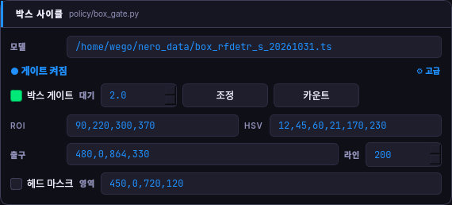
카드 이름은 첫 응용(소포)에서 왔지만, 헤드 카메라에 보이는 물체라면 무엇에나 쓸 수 있습니다.
| 항목 | 하는 일 |
|---|---|
| 모델 | 물체 검출기(box_*.ts)입니다. 비워 두면 색상 판정(HSV)을 씁니다 |
| 박스 게이트 | 집는 영역에 물체가 있을 때만 정책을 실행하고, 매번 끝나면 시작 자세로 돌아갑니다 (§15). 시작 신호가 될 물체가 없는 작업이면 체크를 끄십시오 |
| 대기 | 실행을 시작하기 전에 물체가 집는 영역에 머물러야 하는 시간입니다(초, 기본 2) |
| 조정 | 헤드 카메라 영상을 크게 열고, 집는 영역 · 출구 영역과 학습 당시 화면을 겹쳐 보여 줍니다 (§15). 다시 누르거나 창을 닫으면 멈춥니다 |
| 카운트 | 물체 카운터를 시작하거나 정지합니다 (§15) |
| ⚙ ROI | 헤드 영상에서 물체를 집는 영역(X0,Y0,X1,Y1)입니다 |
| ⚙ HSV | 색상 판정에 쓰는 색 범위입니다 |
| ⚙ 출구 / 라인 | 작업을 마친 물체가 나가는 영역과, 물체가 나갈 때 넘는 영상의 행입니다 |
| ⚙ 헤드 마스크 / 영역 | 정책이 보기 전에 헤드 영상의 한 영역을 덮습니다 |
6.13 키보드
| 키 | 동작 |
|---|---|
| F5 | 녹화 / 라벨 없이 정지 |
| F6 | 정지, 성공 |
| F7 | 정지, 실패 |
| Esc | 비상 정지 |
상태 표시
| 카드 | 표시 | 뜻 |
|---|---|---|
| 로봇 | 오프라인 | 이 제어판에서 시작한 브리지 없음 |
| 시작 중 | 브리지가 팔에 연결 중 | |
| 관찰 | 연결됨, 관절을 읽는 중, 모터 꺼짐 | |
| 활성 | 모터 켜짐, 팔이 명령을 따름 | |
| 오류 | 팔이 오류를 보고함, 이유는 상태 줄에 표시 | |
| VR 원격조작 | 실행 중 / 보정 중 / 정지됨 | VR이 팔을 조작 / VR이 정책을 보정 / 실행 안 함 |
| 스트림 | n/4 라이브 / 꺼짐 | 로봇 스트림 4개 (5559–5562) 중 살아 있는 수 |
| 카메라 | 라이브 / 꺼짐 | 카메라 영상 수신 여부 |
| 데이터 녹화 | 녹화 중 / 준비 / 정지됨 | 테이크 녹화 중 / 녹화기 대기 / 실행 안 함 |
| 데이터셋 | 변환 중 | 변환 실행 중 |
| 학습 | 학습 / 정지됨 | |
| 추론 | 로봇 / 드라이런 / 정지됨 | 실행 중인 정책의 명령이 가는 곳 |
| 박스 사이클 | 게이트 켜짐 / 게이트 꺼짐, · 카운트 중 | 박스 게이트 켜짐/꺼짐, 물체 카운터 실행 중 |
상태 줄의 팔 모드는 TRACK (추종 중), IDLE, HOLD (추종 한계로 정지, ▶ HOLD 팔 재개를 누르십시오), FAULT입니다.
시작하기 전에
- 팔 전원이 켜져 있고 CAN 인터페이스(
can_left,can_right)가 올라와 있습니다. - 다관절 손이 연결되어 있습니다. 상태 줄에 손마다 Revo2 Touch 장치가 표시됩니다.
- 카메라가 데이터셋을 녹화할 때와 같은 USB 포트에 꽂혀 있습니다.
- 로봇과 헤드 카메라가 녹화할 때와 같은 위치에 있습니다 (조정으로 확인, §15).
- 작업 공간이 비어 있고, 물리 비상 정지 버튼에 손이 닿습니다.
VR 원격조작
- 원격조작 → ▶ 연결 (관찰)을 누릅니다. 표시가 관찰이 될 때까지 기다리면 3D 뷰에 실제 팔이 보입니다.
- 팔을 안전한 자세에 두고 ⚡ 모션 활성화를 누른 뒤 확인합니다. 표시가 활성으로 바뀌고, 팔은 그 자리를 유지합니다.
- ▶ VR 원격조작 시작을 누릅니다. 헤드셋을 쓰고 NERO VR 앱을 엽니다.
- 각 컨트롤러의 버튼(X 왼쪽, A 오른쪽)을 누르고 있으면 팔을 지금 자리에서 잡고, 떼면 팔이 손을 따라옵니다. 언제든 다시 누르면 팔은 멈추고 손만 옮길 수 있습니다.
- Y(왼쪽) / B(오른쪽) 버튼은 그 팔을 멈춥니다(그 자리를 유지합니다). 추적이 끊겨도 멈춥니다.
- 그립 버튼은 네 손가락을 쥐고, 썸스틱은 엄지를 움직입니다.
- 앱의 HOME은 팔을 홈 자세로 보냅니다. 이때 손바닥을 먼저 들어 올려 테이블에서 위쪽으로 떨어지게 합니다.
- 마칠 때는 ■ VR 정지를 누르고, 팔을 내린 뒤 ■ 연결 해제를 누릅니다.
개발팀이 로봇에서 시험한 설정(2026-11-03)은 속도 100 %, 최대 1.60 rad/s, 추종 0.50 s(0.95 rad에서 HOLD)입니다. 빠르게 움직일 때 HOLD가 걸리면 추종을 올리십시오. 로봇 손이 앞에서 서로 닿지 않으면 간격을 올리고 VR을 다시 시작하십시오.
비상 정지 · HOLD · 해제
- 비상정지 (Esc)는 이 제어판이 시작한 브리지로 양팔을 감쇠 정지합니다. 터미널에서 시작한 브리지는 이 버튼에 반응하지 않으므로 물리 비상 정지 버튼을 쓰십시오. 언제나 물리 버튼이 기본 정지 수단입니다.
- 모션이 활성화된 상태에서 연결 해제하거나 제어판을 닫아도 감쇠 정지로 끝나 팔이 내려앉습니다. 이때 제어판이 먼저 확인을 요청합니다. 연결 해제 전에 팔을 내리십시오.
- 비상 정지 후 팔은 잠긴 상태로 남으며, ⚡ 모션 활성화를 눌러도 arm is in e-stop 메시지와 함께 거부됩니다. 팔을 내리거나 받친 뒤 ↺ 비상정지 해제를 누르고(모터 전원이 꺼져 들려 있던 팔이 떨어집니다), 그다음 다시 ⚡ 모션 활성화를 누르십시오.
- HOLD는 비상 정지가 아닙니다. 팔이 명령보다 너무 늦으면(추종 한계 초과) 브리지가 그 팔을 멈춥니다. 상태 줄에 HOLD — press ▶ Resume이 보이면 ▶ HOLD 팔 재개를 누르십시오. 팔이 램프 속도로 명령에 다시 다가갑니다.
시연 녹화
녹화 방법
- 카메라(녹화 → ▶ 카메라)와 VR 원격조작(§9)을 시작합니다. 스트림 카드가 4/4 라이브, 카메라 카드가 라이브여야 합니다.
- 작업과, 이번 세션을 설명하는 조건을 입력합니다.
- F5로 시작하고 작업을 합니다.
- 성공하면 F6, 실패하면 F7(이유 입력), 라벨 없이 멈추려면 F5를 누릅니다.
제어판은 5559에 VR(또는 정책) 명령이 없으면 녹화를 거부하고, 측정된 팔 상태가 없으면 경고합니다. 측정 값이 없으면 테이크에 측정 관절 대신 명령 값이 들어가기 때문입니다.
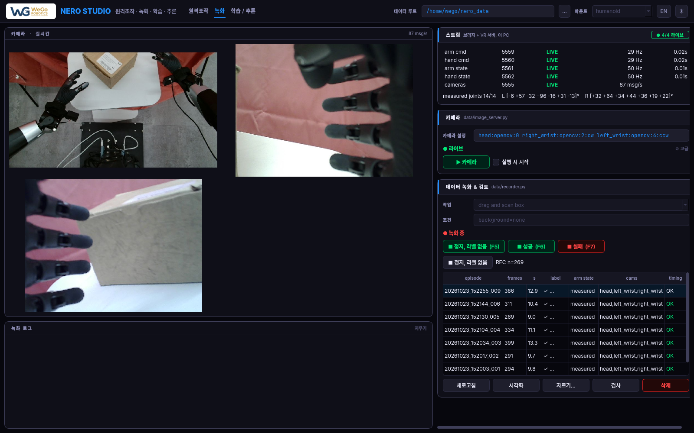
좋은 데이터셋의 조건
- 모든 테이크의 카메라 설정이 같아야 합니다: 같은 카메라, USB 포트, 크기, 회전, 카메라 설정 (카메라 카드의 ⚙ 고정). 세션마다 카메라 설정이 다르면 정책에는 서로 다른 데이터셋이나 마찬가지입니다.
- 헤드 화면이 같아야 합니다: 세션 전에 조정을 열어 로봇과 카메라를 학습 화면에 맞추십시오 (§15). 헤드 화면이 움직였을 때 정책 성공률이 떨어졌습니다.
- 모든 테이크를 같은 자세에서, 팔이 멈춘 상태로 시작하십시오. 정책의 시작 자세가 테이크의 시작 자세입니다.
- 작업은 매번 같은 방식으로 하십시오. 한 작업을 두 가지 방식으로 하면 정책이 혼란을 겪습니다.
- 라벨은 정직하게 붙이고, 1초 이하의 테이크는 삭제하십시오. 그런 테이크에는 작업이 담겨 있지 않습니다.
- 세션 전에는 약 60초 길이의 시험 테이크를, 변환 전에는 폴더 전체를 검사하십시오.
녹화 검토와 편집
테이크 목록에서 테이크를 선택한 뒤 다음 버튼을 씁니다.
- 시각화 (또는 더블클릭): 카메라 영상과 함께 3D로 재생합니다.
- 자르기…: 테이크의 카메라 영상과 start, end 슬라이더 두 개가 나옵니다. Keep selection을 누르면 그 구간만 남기고 파일을 다시 씁니다 (먼저 확인을 요청하며, 되돌릴 수 없습니다). 자른 테이크에는 표시가 붙습니다.
- 검사: 작업의 모든 테이크마다 카메라별 속도, 관절 대비 영상 지연, WARN 또는 BAD의 이유를 보여 줍니다. 이유는 느린 카메라, 카메라-관절 시간차, 녹화기 멈춤, 팔이 명령을 따르지 않음(HOLD) 중 하나입니다. BAD 테이크는 변환에서 제외됩니다 (타이밍 BAD 테이크 포함을 체크하지 않는 한).
- 삭제: 테이크를 완전히 지웁니다 (먼저 확인을 요청합니다).
정책 학습
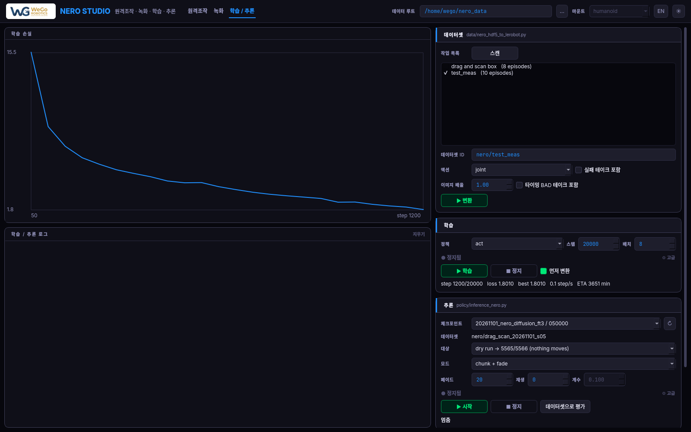
- 데이터셋: 작업을 체크하고, 새 데이터셋 ID를 정하고, 정책에 맞는 이미지 배율을 정합니다 (아래 표).
- 학습: 정책, 스텝, 배치를 고르고 먼저 변환은 체크해 둡니다.
- ▶ 학습을 누릅니다. 그래프와 상태 줄이 진행 상황을 보여 줍니다. 체크포인트는 데이터 루트/train 아래와 체크포인트 목록에 나타납니다.
- 추론 카드의 데이터셋으로 평가로 체크포인트를 작업자와 비교합니다.
| 정책 | 내용 | 이미지 배율 | 배치 |
|---|---|---|---|
act |
LeRobot ACT, ResNet18 영상 인코더 | 1 | 8 |
advanced act |
DINOv3 ViT-S/16 영상 인코더를 쓴 ACT (timm 필요) |
1 | 8 |
diffusion |
Diffusion Policy 실로봇 레시피 30 Hz, EMA 가중치, 영상 증강 | 0.5 | 64 |
smolvla |
lerobot/smolvla_base를 작업 문구로 파인튜닝 |
1 | 64 |
제어판은 Diffusion 데이터셋의 배율이 0.5가 아니거나 배치가 32보다 작으면 경고합니다.
act, advanced act, smolvla는 제3자 사전학습 가중치에서 시작합니다. scripts/wego-install-downloads가 라이선스를 먼저 보여 준 뒤 설치합니다 (§4). 가중치가 설치되지 않은 정책은 ▶ 학습이 거부합니다. 학습 중에는 아무것도 내려받지 않습니다.
학습 장소. 제어판은 자신이 실행 중인 PC의 GPU로 학습합니다. 긴 학습 (수만 스텝 이상의 Diffusion)은 같은 스크립트로 학습 PC에서 합니다. ▶ 학습을 누르면 로그 맨 위에 정확한 명령이 나옵니다. 결과 체크포인트 폴더를 데이터 루트/train 아래로 복사하면 실행할 수 있습니다.
새 장소에 맞추기. 장면이 바뀌면(새 현장, 로봇 이동) 그곳에서 새 테이크를 녹화해 그 테이크만 변환하고, 처음부터 학습하는 대신 기존 체크포인트를 파인튜닝하십시오.
결과 읽기. 데이터셋으로 평가는 학습에 쓴 테이크로 관절마다 작업자와의 차이를 그립니다. 도구의 통과 기준은 팔 평균 오차 2° 미만입니다. 여기서 오차가 크면 데이터나 설정 문제(데이터셋 통계, 특징 이름, 액션 순서)이며, 스텝을 늘려도 고쳐지지 않습니다. 오차가 작다는 것은 정책이 데이터에 맞는다는 뜻일 뿐, 로봇에서 성공한다는 뜻은 아닙니다.
로봇에서 정책 실행
- 체크포인트를 고릅니다. 데이터셋에 그 체크포인트가 학습한 데이터셋이 표시되는지 확인합니다.
- 카메라를 시작하고(정책이 카메라 영상을 봅니다), 로봇을 연결하고 활성화합니다 (§9). VR은 켜지 않습니다.
- 모드(아래 표)를 고르고 대상 → dry run으로 둡니다. ▶ 시작을 누르면 정책을 불러와 실행하고 로그도 나오지만, 아무것도 움직이지 않습니다. 확인한 뒤 ■ 정지를 누릅니다.
- 대상 → ROBOT으로 바꾸고 ▶ 시작을 누른 뒤, 확인 창에서 확인합니다.
- 팔은 먼저 브리지 램프 속도로 학습 테이크의 시작 자세로 이동합니다. 박스 게이트가 켜져 있으면 물체를 기다리고 (§15), 꺼져 있으면 정책이 바로 시작해 ■ 정지까지 실행됩니다.
- ■ 정지로 정책을 끝냅니다. 브리지가 팔을 그 자리에 유지하고, 손은 쥔 상태를 유지합니다.
| 모드 | 정책의 계획을 재생하는 방식 | 용도 |
|---|---|---|
| chunk | 계획한 청크를 끝까지 재생한 뒤 다음 청크를 계획 | ACT 기준선 |
| chunk + fade | 다음 청크를 뒤에서 미리 계획하고 페이드 스텝 동안 섞어 넘김 | NERO의 Diffusion과 ACT. 예시 응용에서 시험한 값: 페이드 20, 재생 0 (자동) |
| temporal ensemble | 가능한 한 자주 다시 계획하고 겹치는 청크를 평균 (계수) | ACT 전용. NERO와 G1에서 효과 없었음 |
| motion player | 정책 없이, 검출기가 본 물체와 물체 위치가 가장 가까웠던 녹화 테이크를 재생 | 실험적 대안. 박스 게이트와 모델, 체크포인트의 LIBRARY 필요 |
재생(chunk + fade 전용)은 0이면 자동(정책의 청크 길이 − 페이드)입니다. 값을 작게 하면 더 자주 다시 계획하므로 팔이 물체 위치에 더 빨리 반응합니다.
정책은 VR 원격조작과 같은 브리지 한계(최대, 추종) 안에서 움직입니다. 추론 출력은
모두 데이터 루트/logs/teleop_<날짜>.log에도 브리지와 같은 시간 축으로 기록됩니다.
물체 게이트: 작업할 물체가 있을 때만 실행
많은 작업은 컨베이어 위의 부품, 테이블에 놓인 물건처럼 물체가 도착하면 시작합니다. 박스 게이트(박스 사이클 카드)를 체크하면 정책이 물체를 기다리며 다음처럼 반복합니다.
| 상태 | 로봇 동작 | 끝나는 조건 |
|---|---|---|
| HOME | 시작 자세를 유지하며 헤드 카메라의 집는 영역(ROI)을 감시 | 그곳에 물체가 보이고 대기 초 뒤에도 있으면 → RUN |
| RUN | 정책을 새로 실행 | 물체가 출구 영역에서 라인을 넘어 나감 (실행 8초 후부터 봄, 출구를 설정했을 때만), 또는 (모델 사용 시) 물체를 사람이 치우거나 떨어져 작업 영역에 2초간 물체 없음, 또는 시간 초과 (가장 긴 학습 테이크의 1.5배), 또는 팔이 3초간 정지 → RETURN |
| RETURN | 손바닥을 5 cm 들어 올린 뒤 부드럽게 시작 자세로 | 시작 자세 도착 → HOME |
판단에는 헤드 카메라만 씁니다. 모델이 있으면 물체 검출기가 물체를 찾고, 없으면 색상 판정을 씁니다. 색상 판정은 ROI 픽셀 중 HSV 범위에 드는 비율로 판단합니다. 색상 판정은 설정이 빠르지만 같은 색이면 무엇에나(피부, 나무, 색깔 있는 벨트) 반응하고 그늘진 물체를 놓칠 수 있습니다. 그 물체로 학습한 검출기가 더 믿을 만합니다 (§17).
시작 신호가 될 물체가 없는 작업이면 박스 게이트를 끄십시오. 그러면 팔이 시작 자세에 도착하자마자 정책이 시작해 ■ 정지까지 실행됩니다.
ROI는 소포가 기다리는 들어오는 컨베이어 끝, 출구는 나가는
컨베이어, 라인은 로봇이 밀어 넣은 소포가 타고 넘어가는 행입니다. 모델은 소포 검출기
box_rfdetr_s_20261031.ts입니다 (RF-DETR Small, 이 작업의 헤드 카메라 영상을 손으로 라벨링해
학습했고, 골판지 소포만 찾습니다). 소포가 나가거나, 걸린 소포를 사람이 치우면 실행이 끝납니다.
조정: 화면과 영역 확인

조정은 헤드 카메라 영상을 크게 열고 그 위에 다음을 그립니다.
- 집는 영역 ROI는 빨강으로 그리며, 물체가 보이면 초록으로 바뀝니다.
- 출구 영역과 라인은 노랑으로 그리며, 물체가 나갈 때 초록으로 바뀝니다.
- 검출기가 찾은 상자는 파랑, 헤드 마스크는 켜져 있을 때 자홍으로 그립니다.
- 학습 당시 화면(데이터 루트/head_train_ref.jpg)을 실시간 영상에 50/50으로 겹치고, view vs training 줄로 화면이 몇 픽셀, 몇 도 어긋났는지 보여 줍니다. 초록 OK는 어긋남이 15 px, 배율 2 %, 롤 1° 이내라는 뜻입니다. 둘째 줄은 학습 테이크들이 차지한 범위입니다.
화면이 어긋나 있으면 겹친 영상이 맞고 OK가 나올 때까지 로봇이나 카메라를 옮기십시오. 정책은 학습한 화면에서만 제대로 동작합니다. 조정 창은 창의 ✕나 조정 버튼으로 닫습니다. 새 작업이면 먼저 그 작업의 학습 화면을 만드십시오 (§17).
카운트: 완료한 물체 수
카운트는 원격조작이나 정책과 함께 물체 카운터를 실행합니다. 헤드 카메라를 읽기만 하고
아무것도 보내지 않습니다. 물체가 출구 영역에서 헤드 영상 위쪽으로, 250행 아래에서
위로 넘어가면 한 번 셉니다 (출구가 설정되어 있어야 하며, 카운터는 라인이 아닌 자체
행을 씁니다). 셀 때마다 ~/nero_data/parcel_count_<날짜>.csv에 추가하며, 같은 날 다시
시작하면 마지막 수에서 이어 셉니다.
소포 작업에서는 나가는 컨베이어가 소포를 로봇에서 멀리, 즉 헤드 영상의 위쪽으로
실어 갑니다. 2026-11-01에는 테이크 189개에서 소포 188개를 셌습니다. 배치가 다른 현장에서는 다음을 참고하십시오. 기준 행은
policy/parcel_counter.py의 --count-line(제어판 항목 아님)이고, 위쪽 방향은 코드에 고정되어
있습니다.
VR로 정책 보정
정책이 틀리는 지점의 보정 데이터를 모으려면(HG-DAgger) 다음 순서를 따르십시오.
- 로봇을 연결하고 활성화합니다. 원격조작 페이지에서 정책 보정을 체크하고 ▶ VR 원격조작 시작을 누릅니다(표시가 보정 중이 됩니다).
- 정책을 ROBOT 대상으로 시작합니다 (§14). 정책이 로봇을 조작하고, VR은 로봇을 따라갑니다.
- 정책이 틀리면 X / A를 누르십시오. 정책이 둔 자리에서 그 팔을 넘겨받습니다.
- Y / B로 돌려줍니다. 1초 뒤 정책이 그 자리에서 다시 시작합니다.
- 테이크는 평소처럼 녹화합니다 (§11). 넘겨받은 기록은
데이터 루트/logs/takeover_<날짜>.jsonl에 남고,data/cut_takeovers.py가 녹화 테이크에서 보정 구간을 잘라 학습용으로 만듭니다.
새 작업에 맞추기
새 작업이라도 제어판 대부분은 그대로 씁니다. 바뀌는 것은 데이터와 장면, 그리고 물체 게이트를 쓴다면 그 설정입니다.
어떤 작업에도 그대로 동작하는 것
원격조작(§9), 비상 정지와 HOLD(§10), 녹화 · 라벨 · 타이밍 검사(§11–12), 변환과 학습 레시피 4종(§13), 추론 모드(§14), VR 보정(§16)은 작업이 무엇인지 모릅니다. 작업은 정책이 테이크에서 배웁니다.
새 작업마다 정할 것
| 항목 | 할 일 |
|---|---|
| 작업 | 새 작업의 간단한 지시문을 정합니다. 이 지시문은 작업 폴더 이름이 되고, 테이크마다 저장되며, SmolVLA가 배우는 지시문이 됩니다 |
| 조건 | 세션마다 달라지는 것(배경, 조명, 작업자, 물체 종류)을 적습니다. 나중에 테이크를 고르거나 제외할 때 씁니다 |
| 마운트 | Revo2 손은 humanoid, 2지 그리퍼는 humanoid_gripper를 고릅니다. 녹화와 실행에 같은 마운트를 쓰십시오 |
| 카메라 | 작업에 쓸 카메라 설정을 한 번 정하고 모든 테이크에 유지하십시오 (§11) |
| 시작 자세 | 따로 정하지 않습니다. 시작 자세는 테이크에서 나옵니다(변환기가 기록). 모든 테이크를 같은 자세에서 시작하십시오 |
| 장면 | 녹화 전에 로봇, 카메라, 작업 영역을 고정하고 그대로 두십시오. 로봇의 위치와 높이를 기록해 두십시오 |
| 학습 화면 | 첫 세션 뒤, 새 테이크로 조정 기준 화면을 만드십시오 (아래) |
| 데이터셋 ID | 새 데이터셋 이름. 의도한 경우가 아니면 다른 작업이나 장면의 테이크를 한 데이터셋에 섞지 마십시오 |
| 정책과 스텝 | §13의 레시피로 시작하십시오. 체크포인트마다 데이터셋으로 평가, 드라이런, 로봇 순서로 확인하십시오 |
조정에 쓰는 학습 화면은 그 작업의 테이크로 만듭니다. 저장소 폴더에서 로봇 PC의 Python으로 다음 명령을 실행하십시오.
.venvs/questarm/bin/python3 policy/box_gate.py --build-ref <데이터 루트>/recordings/<작업 폴더> \
--out <데이터 루트>/head_train_ref.jpg
이 명령은 첫 헤드 화면이 가장 전형적인 테이크를 골라 그 영상과 테이크들의 분포
(head_train_ref.json)을 저장합니다. 조정 창의 view vs training 줄이 이 파일을 씁니다.
새 작업에서 물체 게이트 쓰기
물체가 도착하면 시작하는 작업일 때만 게이트를 쓰십시오 (§15). 순서는 다음과 같습니다.
- 물체를 어떻게 볼지 고릅니다.
- 색상 판정: 모델을 비우고 HSV를 물체 색에 맞춥니다. 조정으로 확인하십시오. 물체가 있으면 ROI가 초록, 없으면 빨강이어야 하며, 팔이나 사람이 화면에 있어도 마찬가지여야 합니다.
- 검출기: 그 물체용 검출기를 학습해 모델에 지정합니다. 게이트가 불러오는 RF-DETR 모델은
TorchScript로 내보낸 파일(
.ts, 로봇 PC의 정책 환경 그대로 CUDA GPU에서 실행) 또는 학습 체크포인트(.pth,rfdetr패키지 필요)입니다. 신뢰도 0.5 이상인 검출은 모두 물체로 봅니다. 검출기 학습은 제어판 기능이 아닙니다. 소포 검출기의 라벨링 · 학습 · 내보내기 스크립트는 개발 PC의~/nero_data/det/box_20261031/tools/에 있습니다..ts를 데이터 루트 아래box_<이름>.ts로 두면 제어판이 기본으로 가장 최근 파일을 불러옵니다.
- 조정을 연 상태에서 ⚙ 고급의 영역을 정합니다: 물체가 기다리는 곳은 ROI, 작업을 마친 물체가 나가는 곳이 있으면 출구와 라인 (없으면 출구를 비우십시오. 그러면 §15의 다른 조건으로 실행이 끝납니다).
- 대기를 로봇이 시작하기 전 물체가 멈춰 있어야 하는 시간으로 정합니다.
- 아래 고정된 실행 종료 값을 확인합니다. 소포 작업에 맞춘 값이며 제어판 항목이 아닙니다.
| 값 | 기본 | 뜻 |
|---|---|---|
--exit-after |
8초 | 실행 시작 후 이 시간이 지나야 출구 감시 시작 |
--box-gone |
2초 | 모델 사용 시: 작업 영역에서 이 시간 동안 물체가 안 보이면 실행 종료 (0: 끔) |
--box-gone-ymin |
150행 | --box-gone의 작업 영역: 물체 중심이 헤드 영상의 이 행보다 아래 |
--run-timeout |
가장 긴 테이크의 1.5배 | 실행 한 번의 최대 시간 |
--home-lift / --home-speed |
0.05 m / 0.3 | RETURN: 손바닥을 이만큼 먼저 들고, 이 속도로 시작 자세로 이동 |
--box-conf |
0.5 | 검출기 신뢰도 기준 |
값을 바꾸려면 제어판의 명령줄(▶ 시작을 누르면 학습 / 추론 로그에 나오는 [infer] $ … 줄)에
원하는 값을 더해 터미널에서 policy/inference_nero.py를 실행하거나,
policy/inference_nero.py와 policy/box_gate.py의 기본값을 바꾸십시오.
저장되는 설정
모든 입력란과 슬라이더는 제어판을 닫을 때 저장되고 다음 실행 때 복원됩니다. 저장되는 항목은 속도, CAN
이름, VR 인자, 카메라, 작업 조건, 데이터셋과 학습 선택, 추론 모드와 값, 물체 게이트 영역,
페이지, 테마, 언어입니다. 저장 위치는 ~/.config/WeGo/NeroStudio.conf입니다.
2026-11-03에 로봇 PC에서 예시 응용에 쓰던 설정은 다음과 같습니다.
| 설정 | 값 |
|---|---|
| 속도 / 최대 / 추종 | 100 % / 1.60 rad/s / 0.50 s |
| 추론 모드 / 페이드 / 재생 | chunk + fade / 20 / 0 (자동) |
| 박스 게이트 / 대기 / 모델 | 켜짐 / 2초 / ~/nero_data/box_rfdetr_s_20261031.ts |
다른 프로그램 연결
모든 데이터는 어떤 프로그램이든 읽을 수 있는 로컬 ZeroMQ 소켓으로 오갑니다.
| 포트 | 스트림 |
|---|---|
| 5559 / 5560 | 팔 / 손 명령 (VR 서버 또는 정책 → 브리지) |
| 5561 / 5562 | 측정된 팔 / 손 (브리지) |
| 5555 | 카메라 영상 (이미지 서버) |
| 5565 / 5566 | 드라이런 때 정책 명령 (받는 곳 없음) |
| 5569 / 5570 | 정책 보정 중의 VR 명령 (§16) |
메시지 형식과 관절 순서는 nero-zmq-api.md에 있습니다. 5559/5560에는
다른 프로그램이 보내고 있지 않을 때만 보내십시오. 마스터는 한 번에 하나뿐입니다.
안전 수칙
- 모션이 활성화된 동안 사람과 물건을 팔이 닿는 범위 밖에 두십시오.
- 물리 비상 정지 버튼에 손이 닿게 하십시오. 이 버튼이 기본 정지 수단입니다.
- 먼저 관찰 모드로 연결하고, 팔이 안전한 자세에 있고 작업 공간이 비었을 때만 활성화하십시오.
- 비상 정지를 해제하면 모터 전원이 꺼져, 들려 있던 팔이 떨어집니다. 먼저 팔을 내리거나 받치십시오.
- 연결을 해제하거나 제어판을 닫기 전에 팔을 내리십시오.
- 새 정책은 항상 드라이런으로 먼저 시험하고, 그다음 빈 공간에서 비상 정지 버튼에 손을 얹은 채 로봇에서 시험하십시오.
- 보이거나 들리는 것이 이상하면 먼저 멈추고, 그다음 원인을 찾으십시오.
문제가 생겼을 때
| 증상 | 원인과 해결 |
|---|---|
| 연결 시 5561 is already published | 다른 곳(터미널)에서 브리지가 실행 중입니다. 그 브리지를 멈추십시오. CAN 버스는 한 번에 한 프로그램만 쓸 수 있습니다 |
| 활성화 거부: arm is in e-stop | 지난 정지로 팔이 잠겨 있습니다. 팔을 내리고 ↺ 비상정지 해제를 누른 뒤 다시 활성화하십시오 (§10) |
| 팔이 HOLD | 팔이 명령보다 늦었습니다. ▶ HOLD 팔 재개를 누르십시오. 빠른 동작에서 반복되면 추종을 올리십시오 |
| 팔이 FAULT | 팔이 오류를 보고했습니다 (이유는 상태 줄). 멈추고 팔과 CAN 케이블을 확인하십시오 |
| 녹화 시 No arm command on 5559 | VR 원격조작을 먼저 시작하십시오 |
| VR 시작이나 정책 시작이 5559 사용 중으로 거부됨 | VR과 정책은 동시에 조작할 수 없습니다. 하나를 멈추거나 정책 보정을 쓰십시오 (§16) |
| 카메라 영상 없음 | ▶ 카메라와 카메라 설정을 확인하십시오. USB를 다시 꽂으면 카메라 번호가 바뀝니다 |
| 3D 뷰가 선으로만 보임 | 이 환경에 MuJoCo나 OpenGL이 없습니다. 이유는 터미널에 표시됩니다. 나머지 기능은 정상적으로 동작합니다 |
| 변환에서 테이크가 빠짐 | 타이밍 BAD이거나 카메라 크기가 다릅니다. 검사로 확인하십시오 |
| GPU out of memory: lower BATCH | 배치나 이미지 배율을 낮추십시오 |
| 정책이 물체 옆을 짚음 | 조정으로 화면을 확인하고 (§15), 로봇의 높이와 위치를 확인하십시오 |
| motion player가 시작되지 않음 | 박스 게이트를 켜고 모델을 지정해야 합니다 |
| ▶ 학습 거부: … starts from pretrained weights that are not installed | 그 정책의 가중치가 없습니다. scripts/wego-install-downloads를 실행하십시오 (라이선스를 먼저 보여 줌). 이전 버전으로 설치한 PC는 --models-dir ~/.cache (§4) |
| 설치가 sha256 … != pinned … (refused) 또는 THESE PACKAGES DO NOT MATCH THE HASHES 로 멈춤 | 내려받은 파일이 고정된 파일과 다릅니다 (다운로드 오류, 프록시, 원본 변경). 그 파일로는 아무것도 설치하지 않았습니다. 다시 실행하고, 반복되면 출력을 WeGo에 보내 주십시오 |
| 학습·평가·추론이 CUDA가 없어 멈춤 | GPU 구성요소가 설치되지 않았습니다 (--cpu-only, 또는 NVIDIA 라이선스에 동의하지 않음). scripts/wego-install-downloads --check로 확인하고 scripts/wego-install-downloads로 설치하십시오 |
원격조작 로그는 데이터 루트/logs/teleop_<날짜>.log에도 저장됩니다. 문제를 알릴 때 이
파일과, 그때 무엇을 하고 있었는지를 함께 보내 주십시오.
라이선스
- WeGo 소프트웨어. NERO Studio, NERO VR과 저장소의 도구는
LICENSE(WeGo Robotics 일반 라이선스 조건)를 따르는 WeGo Robotics 소프트웨어입니다. WeGo Robotics나 공인 파트너에게서 받은 로봇 시스템과 함께 귀사 내부 목적으로 사용하고 수정할 수 있습니다. 조직 밖으로 배포할 수는 없습니다. 소프트웨어를 받은 계약이 우선합니다. 이 조건은 제3자 라이선스가 주는 권리를 줄이지 않습니다. GNU LGPL 구성요소는 수정하거나, 수정한 것으로 교체하거나, 그 수정을 디버그하는 데 필요한 만큼 소프트웨어를 역설계할 수 있습니다. - 제3자 구성요소.
THIRD_PARTY_NOTICES.md에 모든 제3자 항목과 라이선스가 있습니다. 저장소와 VR 앱에 든 것, 설치 스크립트가 설치하는 것이 모두 포함됩니다. 라이선스 원문은licenses/에 있습니다. NERO Studio 창은 Qt for Python (PySide6, LGPL-3.0)을 쓰며, 교체할 수 있도록 따로 설치합니다. - 설치 때 내려받는 것. NVIDIA CUDA 라이브러리와 사전학습 가중치 (§4)는 WeGo가 배포하지 않습니다.
wego-install-downloads가 각 라이선스를 보여 주고, 동의한 뒤에만 설치합니다. - VR 앱. VR 콘솔의 라이선스 버튼을 누르면 패널이 열립니다. WeGo 고지, Revo2 손 모델 출처, Godot
Engine 라이선스와 그 제3자 고지, 앱에 든 라이선스 파일을 보여 줍니다. APK에는
nero-vr-<version>-sources.tar가 함께 제공됩니다. 앱의 유일한 약한 카피레프트 부분 (Mozilla CA 인증서 번들, MPL-2.0)의 소스입니다. - Advanced ACT 체크포인트 에는 DINOv3 가중치가 들어 있습니다. 전달되는 체크포인트에는 DINOv3 License 사본이 함께 갑니다. 군사, ITAR, 무기 용도 등은 금지되어 있습니다. 발표하는 연구에는 DINOv3를 밝혀야 합니다.